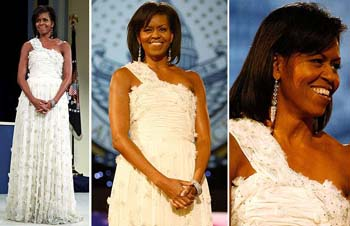

Mediji i moda, ili: Šta nose Mišel i Nataša?
 Dok mi modno novinarstvo (revije, kolekcije, intervjui sa kreatorima i sl) uopšte nije zanimljivo, modni opisi i opservacije vezani za druge događaje i ličnosti su mi omiljeni. Primer jedan: Intervjui i drugi tekstovi u novinama i časopisama gde se uz background informacije u osobi sa kojom se priča navodi i kako je došla/došao na razgovor. Primer dva (sajtovi časopisa, blogovi i sl): Dodela Oskara. Od cele priče o filmovima, ceremoniji, pa i samog gledanja zvezda, najinteresantnije su mi žive - zlobne ili pohvalne, svejedno - diskusije na temu: Kako se ko obukao? Ko je najviše omašio? Da li je neka boja, dezen ili fazon najviše dominirao?
Jučerašnja inauguracija u Americi, i manifestacije tim povom, bile su povod da se različiti američki i svetski mediji pozabave - sa puno pažnje i strasti - tome kako se oblači nova prva dama Amerike. Odgovor je - Odlično. Karla Bruni i ona, i to je to što se tiče stila. Bar koliko ja znam.
Kod nas u medijima ništa se od ovoga nije primilo. Ima ponegde u celebrity magazinima i tabloidima nekih modnih žirija i slično, ali ovo malo ozbiljnijih štampanih ili elektronskih medija koje imamo temu potpuno izbegavaju. Valjda smatrajući da bi im to narušilo kredibilitet. Mada, današnja Politika prenosi izveštaje drugih o jučerašnjoj garderbobi Mišel Obame.
Izuzetak u tome je nedeljnik Vreme, preciznije Dragan Todorović Todor. Svaka njegova reportaža začinjena je i opisima modnih detalja. Prednovogodišnji tekst o dva dana koja je proveo u Skupštini bio je prava poslastica u tom smislu:
...Holom nastupi Nataša Mićić, i to kako bato, sa onu svoju kovrdža frizuru, u ešarpu boje lila, u čarape boje lila, i suknjicu jok lila.
...Holom, sve izlazeći i kipeći iz gaoraste model Uzatelo ‘aljine, prođe od Velje poslanica Janković, holom prođe, jašta nego sa fasciklu, poslanik Vlahović, u te fotelje, šefica sa vunen šal Kolundžija u jedan mnogo sadržajan pauza razgovor sa ministarkom Dragutinović, izađe i ministar Dulić, dade se u susretanje sa Šešelj glumicom Lidijom, koja beše u tu svoju veliku i crnu frizuru, koja beše u taj sapet žuti džemperić, koja beše u tu mnogo kožnu i mnogo sapetu suknjicu, pored tolikog u toga još zagledanja samo uspemo u’vatimo, Oko praznika...
...Stignemo na vreme, pred ulazom u salu vazdan kamera, poslanici se prijavljuju službenicima da stigli, šefica Kolundžija u neke zelene dvodelne dezene, i poslanica Gorica Mojović u toga dana boje i dezeni
Ako ja budem organizovala medijske treninge, tačno znam ko će biti instruktor za obrati-pažnju-na-detalje-i-opiši-ih tekstove.
Više o medijima na Media Mix blogu
***
Iz arhive:
Januar 2007: Tehnologija i nostalgija
Januar 2008: Lekcije iz stila
 RSS feed
RSS feed
 sadržaji se objavljuju pod
sadržaji se objavljuju pod
Komentari
Ladno sam pomislila sinoć kad sam videla Michele u tamno žutom (to treba ekspert da opiše) kompletiću "pitanje je dana kad će ona biti na naslovnoj stani Voguea?"
popkitchen | 21.01.09 15:36
Da, to bi bilo logicno. Ja se secam ljubicaste haljine od letos, odmah me zainteresovala
LLara | 21.01.09 16:13
Mene ova bela podseca na jednu od onih pravljenih od toalet papira, stavljala sam slike.
Feisty | 21.01.09 16:41
Pa da, lice, obe su bele
LLara | 21.01.09 18:59
'Ma nemoj mi brate te Engleze, ovo je Srbija'
mandara | 23.01.09 11:20
Meni su sve Mišeline haljine i kompletici OK ali uvek mi se cini da bi mogle biti jos bolje. Verovatno su mi ocekivanja prevelika. ;) Materijal od tamno zutog kompleta inace dolazi iz Svajcarske, tako da su i Svajcarci nakon inauguracije imali cime da se hvale. ;)
Maja | 25.01.09 22:04
Stvarno, to mi je bas simpa, i Svajcarci su deo globalne drame. Ja sam mislila, ne znam zasto, da su oni imuni na takve stvari.
LLara | 26.01.09 10:44
A ne, Svajcarci se veoma pale na Obamu (Busha su mrzeli, znam masu ljudi koji iz protesta za vreme Busha nisu hteli da putuju u USA) a inace i na sve sapunice i drame.
Maja | 30.01.09 22:09
Popkitchen, evo potvrde, u novom Vremenu:
"Suska se da je u okolini hotela 'Hej Adams', u koji su se Obame smestili dok su cekali da se Bela kuca isprazni, vidjena Ani Libovic, superzvezda medju fotografima, pa ce novi imidz prve dame kao modne ikone, kakvu Amerika nije imala jos od Dzeki Kenedi, biti zapecacen i u 'Vogu'"
LLara | 01.02.09 10:27